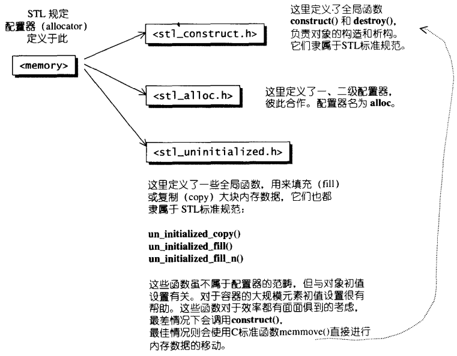
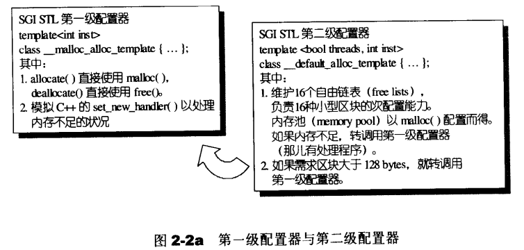
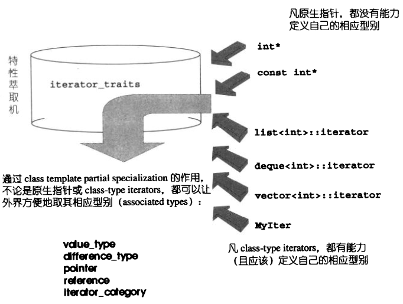

CXX Correlative
不可视境界线最后变动于：2023年2月16日 上午
Modern CXX
Language U3sability Enhancements
2.1 Constants
nullptr
- no implicit conversion from
void*to other types | conflict with C++ overloading - so replace NULL with nullptr.
constexpr
- same declaration position as
const, introduced in C++11. - modern compilers will do most of optimizations, such as
alloca(), so this is not a problem to use variable in declarations. - C++11 provides
constexprto let the user explicitly declare that the function or object constructor will become a constant expression at compile time. - Starting with C++14, the constexpr function can use simple statements such as local variables, loops, and branches internally. But in C++11 only return statement is allowed.
1 | |
2.2 Variables and initialization
if-switch
- define temporary variable in
ifstatement likefor.
Initializer list
- Different initialization methods are specific to each other and cannot be generic.
- C++11 first binds the concept of the initialization list to the type and calls it
std::initializer_list.
Just a language formation -> a specific type can be used as var. - new form:
Foo foo2 {3, 4};
Structured binding
auto [x, y, z] = f();wheref()returns a tuple. No need to usestd::tie()
2.3 Type inference
auto : needless to say.
- Since C++ 20,
autocan even be used as function arguments.
decltype :
Its usage is very similar to typeof | std::is_same<T, U>
tail type inference :
1 | |
decltype(auto) :
a slightly more complicated use of C++14. used to derive the return type of a forwarding function or package
2.4 Control flow
- if constexpr : C++17
if constexpr (std::is_integral<T>::value) {put branch judgement in compile time. - Range-based for loop :
for (auto element : vec)
2.5 Templates
Extern templates : C++11 tell the compiler not to trigger the instantiation of the template.
extern template class std::vector<double>; // should not instantiation in current fileThe “>” : 也就是
>>的编译问题Type alias templates : C++11 typedef now can define a new name for template(the following
vector<T>)
using TrueDarkMagic = MagicType<std::vector<T>, std::string>;Variadic templates : C++11 和 if constexp配套使用. 还有一些细节点击链接.
Fold expression : ?
Non-type template parameter deduction :
1
2
3
4
5
6
7
8//after cpp 11
buffer_t<int, 100> buf; // 100 as template parameter, `template <class T, int BufSize>`
//after cpp 17
template <auto value> void foo() {
std::cout << value << std::endl;
return;
}
int tmp = foo<10>();
2.6 Object-oriented
- 委托构造Delegate constructor : allows a constructor to call another constructor in a constructor in the same class.
- Inheritance constructor : 继承构造 C++11 思维导图已经记过了.
- Explicit virtual function overwrite : ….
- override : self-evident
- final : can’t be override and derived
- Explicit delete default function :
- Strongly typed enumerations :
enum class [enum_name] : type { ... };
Chapter 03: Language Runtime Enhancements
- Basics : C++14 expr capture?
- Generic Lambda : C++14 use auto in parameter list.
- lvalue, rvalue, prvalue, xvalue
- pure rvalue就是传统cpp的右值, 而将亡值(expire value)是指函数返回值那样的东西, C++11之后会使用一个效果等同于隐式转换的操作来将返回值变成一个右值. 实际上通过反编译可以看出函数多传入了上级栈帧的一个临时变量作为返回值的接收者, rax逻辑上没有存任何东西. 如果在新变量定义阶段接收这样的返回值, 那么这个新变量就是上面的临时变量.
- rvalue reference and lvalue reference : 有些细节, 不过不写代码也没必要知道.
- Move semantics :
- 说的花里胡哨, 什么延长了生存周期, 其实就是多了个参数. 只要记住: 将亡值是一个右值
v.push_back(std::move(str));这一句完全不知道哪里清空的str, 反编译没看明白. 记着逻辑上清空了就完了.
- Perfect forwarding : https://stackoverflow.com/questions/8526598#answer-8527373
- 右值引用的变量本身是左值
- 对于左右值引用的引用来说适用于reference collapse. 之前是不允许这样的操作的.
- 在模板函数参数中使用右值引用, 然后
- 当传入左值时模板参数自动推导成左值引用, 使用上面的规则得到右值引用的左值引用为左值引用. 这个变量确实也是左值, forward其实无作用
- 传入右值时还是右值引用, 但是变量本身是左值, 需要forward成右值保持不变.
- 所以使用右值引用做函数参数, 加上个forward就解决了两种情况.
- lvalue, rvalue, prvalue, xvalue
看了半天都写不全, 还是cppreference吧
C++ 11的全部新特性, Cpp14, Cpp17, Cpp20.
11
除了语言特性还看到了一些有趣的东西. 比如 ratio library, Concurrency support library等等
- user-defined literal
- attributes
- noexcept :
- If a function modified with
noexceptis thrown, the compiler will usestd::terminate()to immediately terminate the program. - can also be used as an operator to manipulate an expression
noexcept修饰完一个函数之后能够起到封锁异常扩散的功效，如果内部产生异常，外部也不会触发
- If a function modified with
SGI STL Src
书中源码: https://github.com/yogdzewa/STLSourceCodeNote (更全)
标题为别人的笔记, 感觉没必要再做一个.
介绍
六大组件
- containers
- algorithms
- iterators
- functors(仿函数)
- adapters(配接器)
- allocators(配置器)
allocator
- 为了精密分工， STL allocator 决定将这两阶段操作区分开来。 内存配置操作由 alloc:allocate () 负责， 内存释放操作由 alloc: :deallocate() 负责；对象构造操作由 : : construct() 负责，对象析构操作由 : : destroy() 负责。
- 
- SGI 正是以 malloc(）和 free() 完成内存的配置与释放。
- 

- 感觉没啥特别的, gcc源码一看是用的
std::allocator, 和这里好像不太一样, 暂时跳过
iterator
- 
associative container
书中先讲了红黑树, 然后是各种关联式容器的介绍.